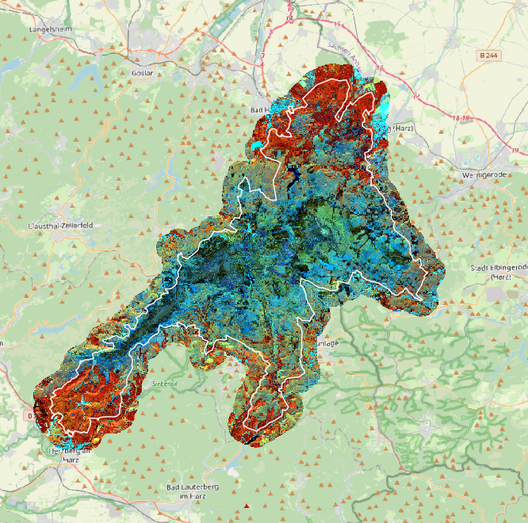
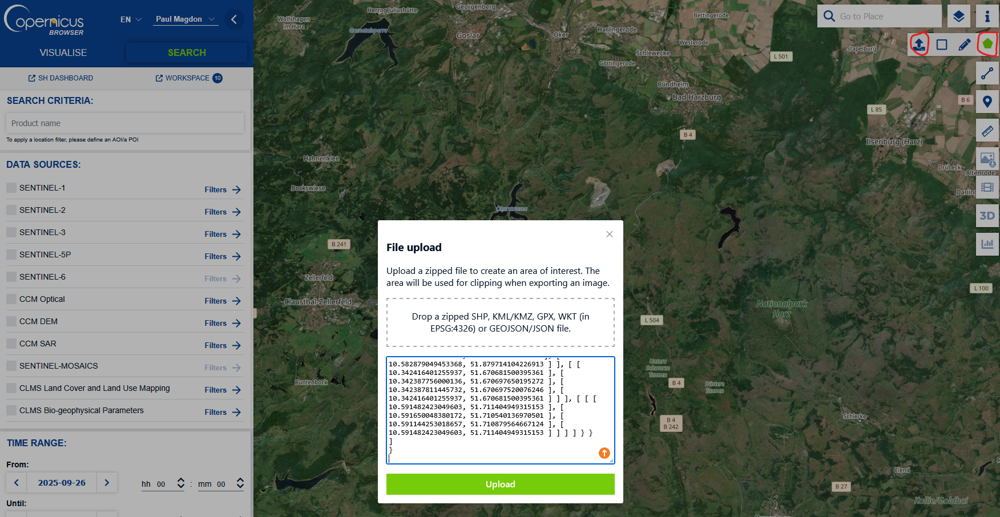

4 Lerneinheit 04: Erstellung einer Satellitenbildkarte des Nationalpark Harz

4.1 Lernziele & Aufgabenstellung
Satellitenbilder stellen eine wichtige Grundlage in Fernerkundungsprojekten dar. Das Copernicus-Programm der Europäischen Union betreibt eine Flotte von Erdbeobachtungssatelliten, die zunehmend im forstlichen Monitoring verwendet werden. In dieser Einheit werden wir das Sentinel-2 Satellitensystem vorstellen und die Eigenschaften der verfügbaren Produkte diskutieren. Dazu soll eine Satellitenbildkarte des Nationalpark Harz erstellt werden. Die Grenzen des NP Harz sollen für die Internet-Präsenz auf aktuellen Satellitenbildkarten dargestellt werden. Diese können auch z.B. als Grundlage für die Planung von Feldaufnahmen oder für die visuelle Erfassung einzelner Waldteile dienen.
Lernziele
Die Studierenden sollen:
- den Dataspace des Copernicus-Programms der Europäischen Raumfahrt Agentur (ESA) kennen lernen
- lernen nach Sentinel-2 Satellitenbilder für bestimmte Regionen und Zeitpunkte zu suchen und herunterzuladen
- die Ordnerstrukturen von Sentinel-2 Datenprodukten kennen lernen und die Satellitenbilder in QGIS importieren können.
- Rasterdaten auf Untersuchungsgebiete zuschneiden können.
Aufgaben
- Suchen sie im Copernicus Dataspace nach einer geeigneten Sentinel-2 Aufnahme aus dem 06-2025 und laden sie diese S2-Kachel herunter.
- Untersuchen sie die Ordnerstruktur des Satellitenproduktes und importieren sie die Bänder B02, B03, B04 und B08 mit einer räumlichen Auflösung von 10 m.
- Erstellen Sie ein CIR-Satellitenbildmosaik des NP-Harzes
- Schneiden Sie das Satellitenbildmosaik auf die Außengrenzen des NP Harz +1000m Pufffer zu und maskieren sie alle Werte außerhalb des Puffers.
4.2 Aufgabe 0: Anlegen eine neuen QGIS-Projektes
Folgen sie der Anleitung aus LE01 Section 1.3 um eine neue Ordnerstruktur und ein neues QGIS-Projekt für LE04 anzulegen.
4.3 Aufgabe 01: Recherche und Download eines aktuellen Sentinel-2 Satellitenbildes
Die Europäische Raumfahrt Agentur (ESA) stellt das gesamte Archiv der Copernicus Daten kostenfrei als offenen Datensatz zur Verfügung. Zur Suche und für den Download solcher Daten wird das online Datenportal https://dataspace.copernicus.eu/ betrieben. Für die Nutzung des Portals ist eine einmalige kostenfreie Registrierung notwendig um einen Nutzernamen und ein Passwort zu erhalten.
Nach der erfolgreichen Registrierung kann ein Login auf der Homepage erfolgen. Für die Suche nach Daten wird der Copernicus-Browser unter folgender URL angeboten:
https://browser.dataspace.copernicus.eu
Der Browser bietet umfangreiche Möglichkeiten nach Geodatenprodukten zu suchen.
Festlegen der Area of Interest (AOI)
Dazu kann eine Geometrien des Untersuchungsgebietes verwendet werden. Als mögliches Datenformat für die Definition der Geometrie akzeptiert der Copernicus-Browser GeoJSON. Das ist ein Text-basiertes Format zum speichern von Vektordaten (siehe auch https://de.wikipedia.org/wiki/GeoJSON). Für die Übung soll die Außengrenze des NP-Harz genutzt werden. Das entsprechende GeoJSON kann hier heruntergeladen werden:
https://cloud.hawk.de/index.php/s/2Zg8raN2qsHMyZf
Speichern sie diese Datei in ihrem Projektordner im Unterordner “daten”. Diese Datei kann sowohl mit QGIS als auch mit einem Texteditor (z.B. Editor, WordPad, Notepad++) geöffnet werden. Öffen sie die Datei in einem Texteditor und kopieren sie alle Zeilen des GeoJSON-Datei.
Im Copernicus-Browser kann nun eine Area of Interest (AOI) mit diesen Informationen angelegt werden. Dazu rechts oben auf das Polygonsymbol klicken und den Upload Icon auswählen. In das Textfeld des Dialogs den kopierten Inhalte des GeoJSON einfügen.

Nach dem erfolgreichen Upload werden die Außengrenzen des Nationalparks Harz im Browser angezeigt.
Auswahl und Download der gewünschten Produkte
Auf der linken Seite des Browsers können die gesuchten Produkte spezifiziert werden. In der Lerneinheit arbeiten wir mit Produkten des Sentinel-2 Systems. Zusätzlich können Filter gesetzt werden:
Sensor: MSI (Multispectral Instrument)
Cloud Cover: <10 %
Produkttyp: L2A
Im Abschnitt “Time Range” kann festgelegt werden, in welchem Zeitraum Bilder gesucht werden. Für die Übung möchten wir eine Aufnahme aus dem Juni 2025 suchen und setzen daher folgende Werte:
Time Range:
From: 2025-06-01
Until: 2025-06-30
Nachdem die Suche gestartet wurde wird eine Ergebnisliste angezeigt die alle Aufnahmen, welche unseren Kriterien entsprechen, enthält. Aufgrund der Aufteilung der S2-Kacheln deckt keine der Aufnahmen den gesamten Bereich des Nationalparks ab. Für die Übung wählen wir daher die beiden Kacheln vom 12.6.2025 welche den Nationalpark abdecken:
S2B_MSIL2A_20250612T102559_N0511_R108_T32UNC_20250612T131505.SAFE
S2B_MSIL2A_20250612T102559_N0511_R108_T32UPC_20250612T131505.SAFE
Wählen sie diese Aufnahmen aus und beantworten sie mithilfe des Copernicus-Browsers folgende Fragen:
Fragen:
Um welche Uhrzeit wurde die Aufnahme gemacht?
Wie hoch ist der Wolkenanteil der gesamten S2-Kachel?
Welcher der drei Sentinel-2 Satelliten hat die Aufnahme gemacht?
Welche Dateigröße hat eine der beiden S2-Kacheln?
Laden sie anschließend jeweils die gesamte Szene als Datei herunter und speicher sie die ZIP-Datei in ihrem Projektordner unter “daten”.
4.4 Aufgabe 02: Import der Satellitendaten in QGIS
Die Satellitenprodukte werden von der ESA in einer standardisierten Struktur gespeichert und ausgeliefert. Eine detailierte Beschreibung der Produkte finden sie in der Dokumentation unter: https://sentiwiki.copernicus.eu/web/s2-products. Nach dem Entpacken der ZIP-Datei finden sie folgende Ordnerstruktur:
S2B_MSIL2A_20250612T102559_N0511_R108_T32UNC_20250612T131505.SAFE/
├── DATASTRIP/
│ └── DATASTRIP/
| └── DS_2BPS_20250612T131505_S20250612T103519/
├── GRANULE/
│ └── L2A_T32UNC_20250612T103519
| | └──AUX_DATA
| | └──IMG_DATA
| | | └──R10m
| | | | └──T32UNC_20250612T102559_AOT_10m.jp2
| | | | └──T32UNC_20250612T102559_B02_10m.jp2
| | | | └──T32UNC_20250612T102559_B03_10m.jp2
| | | | └──T32UNC_20250612T102559_B04_10m.jp2
| | | | └──T32UNC_20250612T102559_B08_10m.jp2
| | | | └──T32UNC_20250612T102559_TCI_10m.jp2
| | | | └──T32UNC_20250612T102559_WVP_10m.jp2
| | | └──R20m
| | | └──R60m
| | └──QI_DATA
| < └──MTD_TL.xml
├── HTML/
├── rep_Info/
├── inspire.xml
├── manifest.safe
├── MTD_MSIL2A.xml
├── S2B_MSIL2A_20250612T102559_N0511_R108_T32UNC_20250612T131505-ql.jpg In einigen Fällen kommt es beim Entpacken zur Fehlermeldung “Dateiname zu lang”. In diesem Fall benennen sie die beiden ZIP-Ordner vor dem Entpacken in “bild_1” und “bild_2” um.
Fügen sie die Bänder B02, B03,B04 und B08 mit einer räumlichen Auflösung von 10m zu ihrem QGIS-Projekt hinzu.
Ordnen sie die Bandnummern des Sentinel-2 MSI den Spektralbereichen zu (z.B. rot):
B02 =
B03 =
B04 =
B08 =
4.5 Aufgabe 03: Erstellen eines CIR-Falschfarbenbildes
Nachdem Inport der einzelnen Bänder werden diese als Graustufenbilder dargestellt. Um eine Farbdarstellung zur ermöglichen, müssen die Bänder als Mehrkanalfarbild zusammengestellt werden. Siehe auch LE02 Section 2.4. Erstellen sie für beide Kacheln ein virtuelles Mehrkanalraster und speichern sie diese unter:
S2B_MSIL2A_20250612T102559_N0511_R108_T32UNC_20250612T131505.vrt
S2B_MSIL2A_20250612T102559_N0511_R108_T32UPC_20250612T131505.vrt
Erstellen sie anschließend ein virtuellles Satellitenbildmosaik und stellen sie es in QGIS als CIR-Bild dar. Folgen sie dazu auch der Anleitung aus der LE02 Section 2.6.
Vergleichen sie die CIR-Darstellung innerhalb und außerhalb des Nationalparks:
1.) Welche Unterschiede in den Farben/Reflexion können sie feststellen?
2.) Wie interpretieren Sie diese Unterschiede im Bezug auf die Bewirtschaftungskonzepte der beiden Betriebe?
Zur Beantwortung der 2. Frage ist es hilfreich das aktuelle DOP20 Luftbild der LGLN einzubinden. Siehe dazu auch Section 3.4 in LE03.
4.6 Aufgabe 04: Zuschneiden des Satellitenbildmosaiks
Die beide original S2-Kacheln decken ca. 100 x 100km ab. Der Bereich ist also deutlich größer als der gesamte Harz. Um diesen Bereich zu verkleiner sollen die Satellitenbilder auf den Nationalpark zugeschnitten werden. Um die Grenzen trotzdem gut darstellen zu können, so ein Puffer von 1000 m um die Außengrenzen des Parks gelegt werden.
Außengrenze Puffern
Speichern sie das GeoJSON der Nationalparkgrenze als Geopackage in Unterordner “daten” ab. Achten sie dabei darauf das Koordinatenbezugssystem (kbs) auf EPSG:25832 zu stellen. Führen sie anschließend einen Puffer von 1000 m durch.
Bild zuschneiden und maskieren
Zum Maskieren und zuschneiden nutzen Sie anschließend die Funktion:
Raster →Extraktion → Raster auf Layermaske zuschneiden
Speichern sie das neue Raster unter dem Namen NP_Harz_2025_06_12 als *tif im Unterordner “daten” ab und laden sie die Satellitenbildkarte als CIR-Falschfarbenbild in QGIS. Überlagern sie das Bild mit den originalen Außengrenzen des Nationalparks.
4.7 Aufgabe 05: Projekt bereinigen und sichern
Nachdem wir das Satellitenbild mosaikiert und zugeschnitten haben können wir die original Satellitenbilder aus dem Projekt entfernen und auch aus dem Ordner “daten” löschen. Sie brauchen nur die Geopackages und die Datei NP_Harz_2025_06_12.tif behalten. Speichern sie dann das QGIS-Projekt, schließen sie QGIS und kopieren sie den Projektordner von D: in Ihr persönliches Laufwerk.